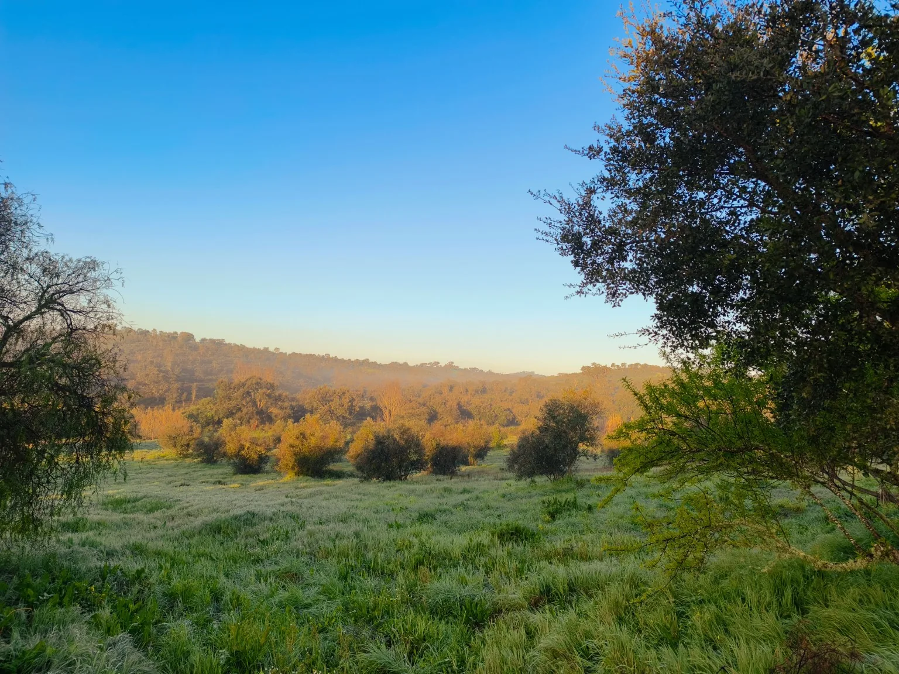
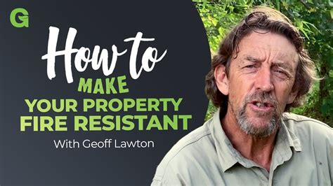
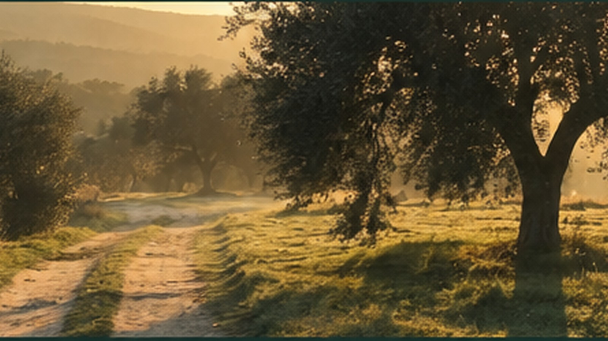

Fund it
Cash raised
Target €30,000Cash raised
€0€5.5k€15k€27k€30k
€0of €30,000
Next milestone: €5,500 — secure the course.
Campaign not yet live
In the Alentejo, we are beginning with one real landscape — and one practical question: how do we restore water, soil and resilience while creating livelihoods that do not depend on exhausting the land?
We are not waiting for the place to be finished. The beginning is part of the demonstration.
Monte Ventosa is a 140-hectare landscape in Portugal's Alentejo. The land is here. The questions are here. The need is here. What is still missing is much of the infrastructure that allows people, knowledge and practical work to meet in one place.
Instead of hiding that unfinished beginning, Terra-Be-Utopia wants to make it visible: to learn from experienced practitioners, test solutions in real conditions, document what works and let each course leave the land better equipped than before.

What if farms could hold more water, withstand fire better and become more profitable because the land is regenerating — not despite it?

One of the long-term aims is to make practical regenerative land management visible to farmers and landowners across this region — not as an idealistic alternative to productive agriculture, but as a way to build healthier soils, stronger water cycles, greater resilience and viable livelihoods over time.
In a dry Mediterranean landscape, two themes are impossible to ignore: water and fire. We want Monte Ventosa to become a place where experienced educators can demonstrate approaches to water abundance, fire resilience, soil regeneration and productive permaculture in conditions that are relevant to the Alentejo.
Cash secures commitments we cannot replace. Equipment partnerships reduce what needs to be bought and leave useful infrastructure on the land. We will update both sides as the project grows.
Contribute to the cash commitments that make the first course and its essential infrastructure possible.
Follow the cash progressCompanies, makers, farmers and suppliers can provide equipment, materials, transport, loans or discounts.
See current needsPractical people, specialists and volunteers can help turn plans into working systems.
Build with usAn introduction to the right farmer, manufacturer, foundation, educator, journalist or supporter can change everything.
Make an introductionTerra-Be-Utopia is not pretending to have every answer. The first phase deliberately brings experienced educators and practitioners into a real landscape so that knowledge can be applied, questioned, adapted and passed on through practice.
Experienced teaching enters the landscape.
Learners, helpers and specialists gather around a real challenge.
Infrastructure and land interventions are created through practical work.
What worked, what failed and what changed remains visible.
The next course begins from a stronger starting point.
Deposit and the first necessary travel commitments so the course can be set in motion.
The educator and core course commitments are financially covered.
Water, kitchen, sanitation, classroom, tools, helpers and essential logistics.
Room for transport, technical requirements, price differences and the unexpected without cutting essential corners.
We are looking for companies and local partners who would rather put useful equipment into a real regenerative demonstration project than simply send a donation.
There is more than one way to build something. We will need people who can make, organise, cook, grow, fix, document, welcome and learn.
Maybe you know a solar company. A farmer with the right straw bales. A foundation. A manufacturer. An educator. A journalist. A creator. Or one person who immediately understands why this matters.
Open the door. We can take it from there.

Fund it. Equip it. Build it. Open a door.